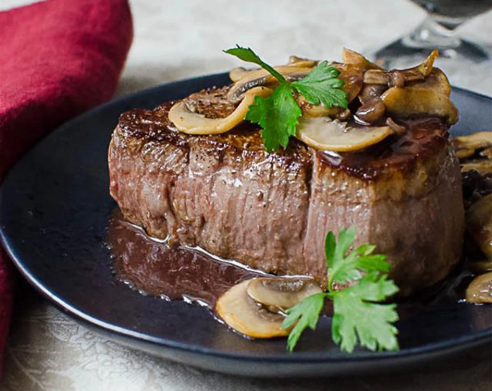

Description - Pan Seared Steak
If you're making steaks inside, you've come to the right place. This technique for cooking steak in a cast iron skillet is unbeatable. What sets it apart? It starts on the stove in a cast iron skillet, but you'll finish the steak in the oven. The stovetop-to-oven method produces steaks with a deeply caramelized crust and a tender, perfectly cooked interior.
Ingredients
- 2 (6 ounce) beef top sirloin steaks
- 2 Cups orange juice
- 1 Cup applie cider vinegar
- ½ Cup worcestershire sauce
- 1½Tablespoons steak seasoning
- Freshly ground black pepper
- 2 teaspoons olive oil
- Sea salt
Steps
- Gather all ingredients.
- Place steaks side by side in large casserole dish. Add orange juice, cider vinegar, and Worcestershire sauce.
- Preheat the oven to 425 degrees F (220 degrees C). Remove casserole dish from refrigerator. Cover steaks with plastic wrap and let allow to come to room temperature, at least 15 minutes.
- Cook steaks in the hot skillet until lightly browned on the bottom, 2 1/2 minutes.
- Transfer skillet with the steaks to the oven.Bake in the preheated oven until steaks are firm and reddish-pink to lightly pink in the center, 8 to 10 minutes. An instant-read thermometer inserted into the center should read from 130 degrees F (54 degrees C) to 140 degrees F (60 degrees C).
Remove steaks from oven; season with salt. Let rest for 5 minutes before serving.